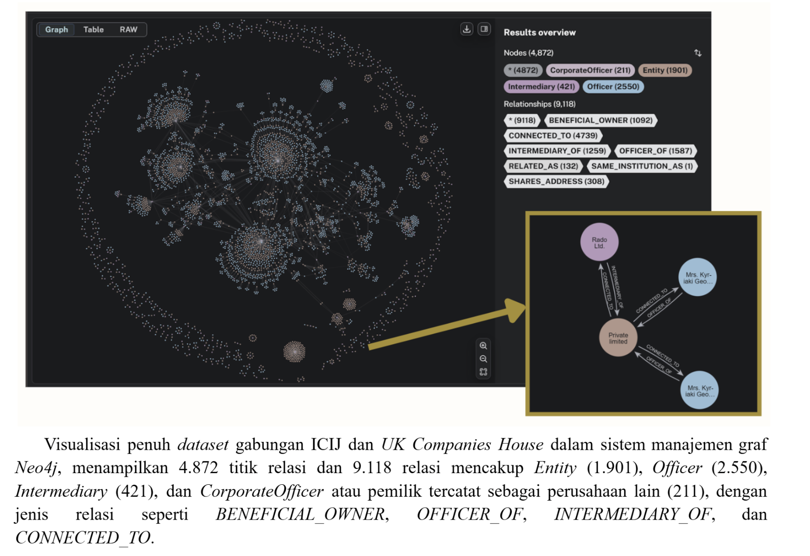
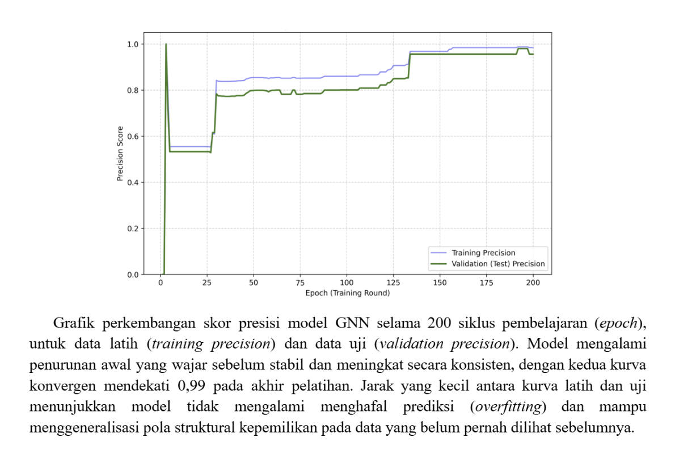
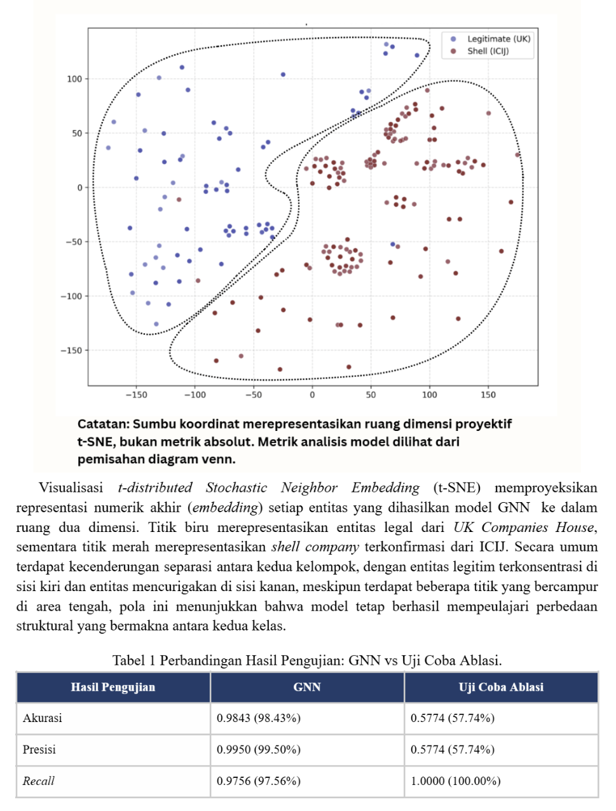
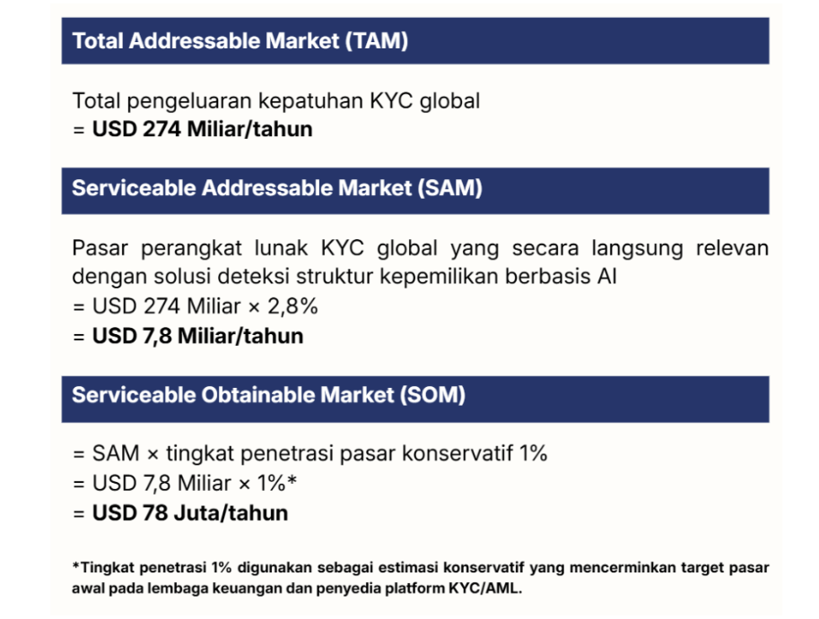
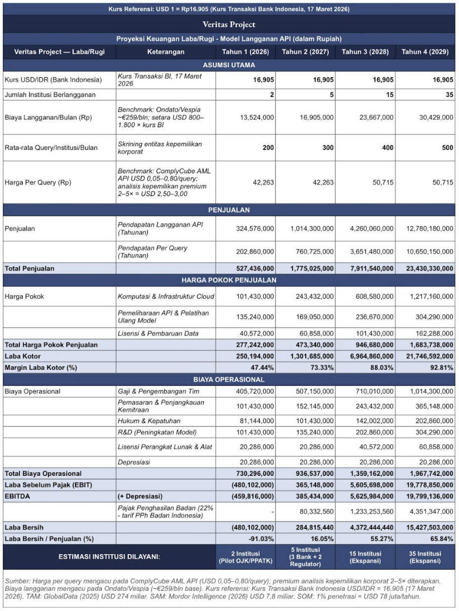
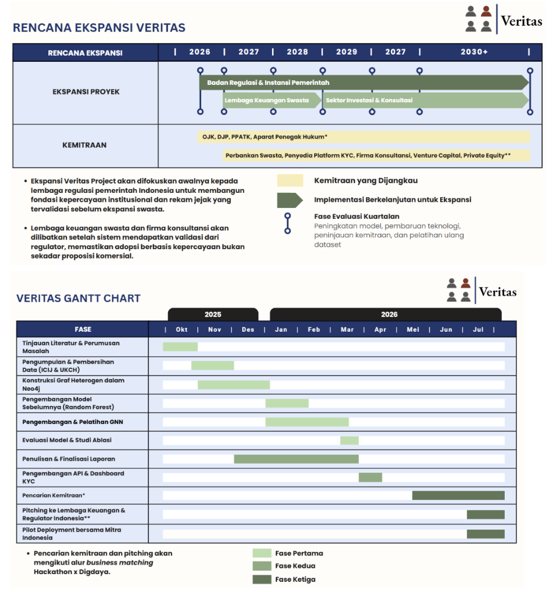
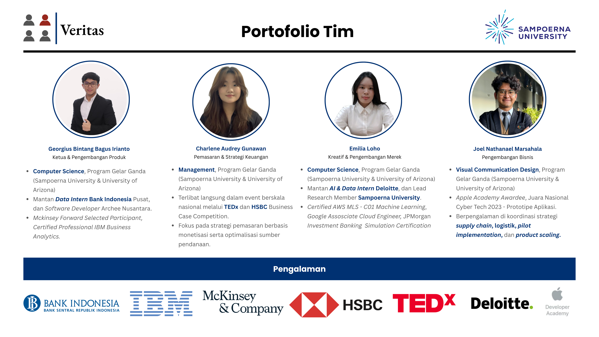

| Nama Perusahaan | Direktur / Pejabat | Perantara Terdaftar | Yurisdiksi |
|---|---|---|---|
| Meridian Capital Ltd Ditandai | Alexander Petrov | Mossack Fonseca Firma Hukum | British Virgin Islands |
| Sunstone Holdings Pte | Li Wei Chen | DBS Trust Services | Singapura |
| Orion Advisory Corp Ditandai | Alexander Petrov | Mossack Fonseca Firma Hukum | British Virgin Islands |
Masukkan detail perusahaan. Sistem akan menghitung skor kemungkinan shell company menggunakan faktor risiko yurisdiksi dan sinyal topologi grafik kepemilikan.
Seseorang yang dipinjam namanya oleh pemilik asli agar identitas pemilik sebenarnya tidak tercatat secara resmi.






